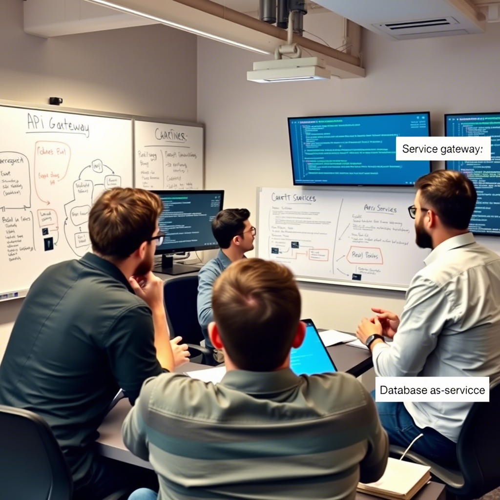

前端开发
现代前端框架对比：React vs Vue vs Angular
深入分析三大主流前端框架的优势与应用场景，助你选择最适合的开发工具。
张三
2024-03-15
1.2k

后端开发
微服务架构实践指南
从单体应用到微服务的演进，探讨架构设计原则和最佳实践。
李四
2024-03-14
980
人工智能
深度学习在图像识别中的应用
探索CNN、ResNet等深度学习模型在计算机视觉领域的实际应用。
王五
2024-03-13
856
Web3
Web3 DApp开发实战指南
探索区块链技术在Web应用中的创新应用，从智能合约到去中心化存储。
赵六
2024-03-12
723
DevOps
云原生架构最佳实践
深入探讨Kubernetes、Docker等云原生技术在现代应用架构中的应用。
张三
2024-03-11
689
安全
Web应用安全防护指南
全面介绍Web安全威胁和防护策略，包括XSS、CSRF等常见攻击的防范。
李四
2024-03-10
645